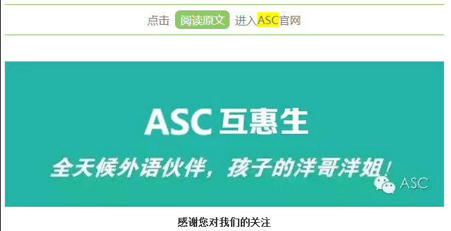

互惠动态
|
|
“隐帝”爸爸害一生，“圣母”妈妈毁三代
爸爸成隐帝，居然是常态
有一份针对北京3~6岁幼儿父亲的调查显示：80%的父亲认为自己工作忙，没有时间与孩子交往。
对天津1054人的调查显示：一半以上的家庭存在子女教育父亲“缺位”的情况，母亲是子女养育教育的绝对主角。
爸爸对家庭的重要性，一直被回避了
爸爸对家庭的重要性，一直被回避了。
最显而易见的两点，对于男孩，父亲能将宽厚的胸襟、勇于克服困难的精神潜移默化地转移到孩子身上，使孩子在成长中吸收到丰沛的“阳刚之气”。我们现在老说男孩子变得脆弱、女性化，甚至身体素质差，发出呼吁——“救救男孩”。
问题是，自己亲爹都不上手，还指望幼儿园增加男老师达到效果？太傻太天真。
对于女孩，爸爸其实还担当了一个重大的角色，帮助孩子进行性别认知。
我们见过很多单亲家庭的女孩，长大后有恋爱上瘾症，甚至恋爱中自残，是因为没见过负责的男性，一个正面的可参考对象，对于健康的两性关系，没有天然地认知。
爸爸隐帝可怕，妈妈圣母心更可怕
爸爸是隐帝，原因很多。
有的是工作性质确实无奈，军人，警察，医生；这些职业，恕我直言，本身就是高离婚率职业，包含着对家庭的某种损害为代价。
另一种情况，是大男子主义根深蒂固——男主外女主内，除了交工资这个家所有事儿都是女人的事，口头禅是“我总比那些在外面玩女人的、打牌的要强吧”。
你当然可以晓之以情动之以理，说出自己做女人的不易，不过冰冻三尺非一日之寒，假如他有基本对女人的尊重，这些行为根本就不会出现，所以，婚姻里最重要的还是选对一个人，其他都是然并卵。
但我最想说的一点是，第三种情况——女人表面觉得辛苦，潜意识却是认同“这年头男人不嫖不赌就不错了”的观念，甚至以在家庭中多付出，认为是一种持续投入的道德成本，为自己赢得更高的家庭地位。
这就是圣母心。
表现在什么呢？男人为孩子冲几次奶，带去游乐场玩半天，感恩戴德，恨不得昭告天下；男人北京瘫打游戏，自己在一边干家务累得半死，一边抱怨，还一边给男人做服务：“我去买你最爱吃的菜啦，你今晚吃什么？”
中国女人的圣母心，是深刻的自卑，可是，当你把自己放进尘埃的时候，你没有意识到，你的孩子正在某个角落，默默看着这一切，他的人生，也顺便被带进了尘埃。
孩子，会潜意识，走父母走过的路。
想让爸爸们不隐形，你要给足上台机会
对于隐帝爸爸，我能给出的唯一办法就是——让老公吃苦。
老公在的时候，你该休息就休息，不要觉得他已经上班很累，因为你也很累，你不是全能机器人。
该让老公辅导功课、完成早教、带孩子单独赴饭局，放手让老公做，不要觉得“他做成这样不如我来”或者“男人就不是带孩子的料”，如果你坚持不放手，父亲的付出意识会越发淡漠。
一定要让他多付出啊，人都是对自己的付出的，难以放手，而不是得到的。
你说，我就是不放心也舍不得啊。
那你当我啥都没说，我们永远叫不醒装睡的人。
只是拜托你，不要身体很愉悦，嘴上还抱怨。你到底想让对方怎么做？
孩子来到世界之前，在妈妈的肚子里呆了10个月，妈妈和孩子天然有一种深刻联系；对于爸爸来说，却是孩子呱呱坠地那个时刻，一夜之间当上爸爸，对于这个身份，他们天然要学习。
爸爸当隐帝，原因很多，排除那些你无法改变的，从你可以掌握的做起：放手，给老公足够多，在舞台亮相的机会。足够的激励和成就感，是让逃避责任的“隐帝”，成为“教子如戏，全能演技”的影帝的前提。

